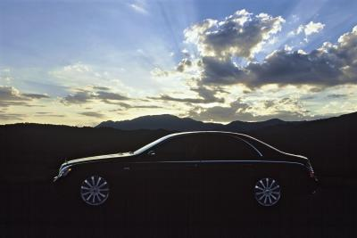
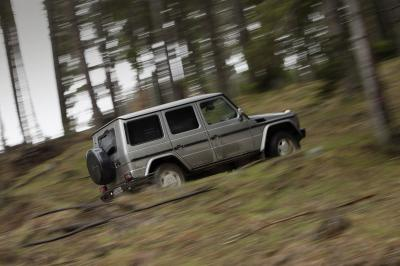

Läs om lyxiga tillval och lösningar som finns till Maybach
October 28th, 2011
Do you want to know more
Nya m-klass

Se den nya designen på en omåttligt populär suv!
Läs mer här
Har du behov av en extra tuff merca?
Nu kan du läsa om de bepansrade stjärnorna – Mercedes-Benz Guard.

Läs här
När det bästa helt enkelt inte är tillräckligt bra. eller om du tycker att S-klass är för vanlig - då väljer man en Maybach!

Läs om Maybach och historien bakom här
Vår värsta G-Klass har mindre av allt!

Mercedes G-Klass har gått från att vara en fantastisk terrängarbetsbil till att bli en av märkets allra lyxigaste modeller. En bil som har mer av det mesta och som blivit en favorit hos shejker och slottsherrar/damer. Med G-Klass Professional har vi tagit allt ett steg längre. Garanterat utan lyx. Mindre av allt. Och sannolikt den mest hårdhudade terränggående bil du kan köpa idag!
Läs mer här
Nya Mercedes:
- Snart på ett ICA Maxi nära dig!
Vill du se nya Mercedes-Benz C-Klass? Men blir det aldrig av att du åker till någon av våra återförsäljare? Då har vi en ny idé – åk till ICA Maxi istället!
Nu kan du lära dig om hur Mercedes döper sina lastbilar.
Läs här
Nu lanserades Mercedes-Benz fjärde generation av sin långdistansmodell Actros. Nya Actros kommer att förses med de helt nya motorerna i ”BlueEFFICIENCY Power” serien. Den blir därmed först i världen med att uppfylla de helt nya Euro 6 miljökraven.
Läs mer här
{kind=link}
{kind=link}
{kind=link}